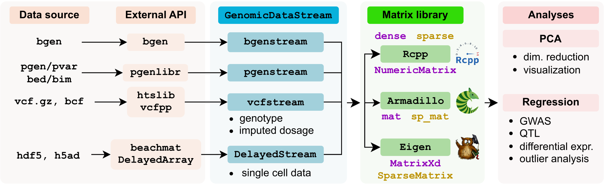

GenomicDataStream
A scalable interface between data and analysis underneath R

Reading genomic data files (VCF, BCF, BGEN, H5AD, DelayedArray) into R/Rcpp in chunks for analysis with
The GenomicDataStream interface separate:
- data source
- streaming chunks of features into a data matrix
- downstream analysis
GenomicDataStream provides interfaces at both the C++ and R levels. The C++ interface prioritizes efficiency, while the R interface wraps the C++ backend for non-technical users.
See header-only C++ library documentation
Usage
In general, variants from genetic data are used as covariates in lmFitFeatures(), and genes from single cell data are used as responses in lmFitResponses().
Example code with R
Read genotype data into R
library(GenomicDataStream)
# VCF file
file <- system.file("extdata", "test.vcf.gz", package = "GenomicDataStream")
# initialize
gds = GenomicDataStream(file, "DS", chunkSize=5, initialize=TRUE)
n = 60
y = rnorm(n)
design = matrix(1, n, 1)
# loop until break
while( 1 ){
# get data chunk
# data$X matrix with features as columns
# data$info information about each feature as rows
dat = getNextChunk(gds)
# check if end of stream
if( atEndOfStream(gds) ) break
# do analysis on this chunk of data
fit = lmFitFeatures(y, design, dat$X)
}Use R to run analysis at C++ level
library(GenomicDataStream)
# VCF file
file <- system.file("extdata", "test.vcf.gz", package = "GenomicDataStream")
# create object, but don't read yet
gds = GenomicDataStream(file, "DS", chunkSize=5)
n = 60
y = rnorm(n)
design = matrix(1, n, 1)
# regression of y ~ design + X[,j]
# where X[,j] is the jth variant in the GenomicDataStream
# data in GenomicDataStream is only accessed at C++ level
fit = lmFitFeatures(y, design, gds)Example code with C++17
#include <RcppArmadillo.h>
#include <GenomicDataStream.h>
// use namespace for GenomicDataStream
using namespace gds;
// parameters
string file = "test.vcf.gz";
string field = "DS"; // read dosage field
string region = ""; // no region filter
string samples = "-"; // no samples filter
int chunkSize = 4; // each chunk will read 4 variants
// initialize parameters
Param param(file, region, samples, chunkSize);
param.setField( field );
// Initialise GenomicDataStream to read
// VCF/BCF and BGEN with same interface
unique_ptr<GenomicDataStream> gdsStream = createFileView( param );
// declare DataChunk storing an Armadillo matrix for each chunk
DataChunk<arma::mat> chunk;
// Store meta-data about each variant
VariantInfo *info;
// loop through chunks
while( gdsStream->getNextChunk( chunk ) ){
// get data from chunk
// chunk.getData();
// get variant information
info = chunk.getInfo<VariantInfo>();
// Do analysis with variants in this chunk
}Supported formats
Genetic data
| Format | Version | Support |
|---|---|---|
| BGEN | 1.1 | biallelic variants |
| BGEN | 1.2, 1.3 | phased or unphased biallelic variants |
| PGEN | plink2 | |
| BED | plink1 | |
| VCF / BCF | 4.x | biallelic variants with GT/GP fields, continuous dosage with DS field |
Single cell data
Count matrices for single cell data are stored in the H5AD format. This format, based on HDF5, can store millions of cells since it is designed for sparse counts (i.e. many entries are 0) and uses built-in compression. H5AD enables file-backed random access for analyzing a subset of the data without reading the entire file in to memory.
Dependencies
| Package | Ref | Role |
|---|---|---|
| vcfppR | Bioinformatics | C++ API for htslib |
| htslib | GigaScience | C API for VCF/BCF files |
| beatchmat | PLoS Comp Biol | C++ API for access data owned by R |
| DelayedArray | R interface for handling on-disk data formats | |
| Rcpp | J Stat Software | API for R/C++ integration |
| RcppEigen | J Stat Software | API for Rcpp access to Eigen matrix library |
| RcppArmadillo | J Stat Software | API for Rcpp access to Armadillo matrix library |
| Eigen | C++ library for linear algebra with advanced features | |
| Armadillo | J Open Src Soft | User-friendly C++ library for linear algebra |
Notes
GenomicDataStream provide flexability in terms of data input types and and matrix libraries. This can useful in many cases, but the large number of dependencies can require installation of additional libraries and increase compile times. Some of these dependencies can be avoided by removing support for some capabilities with compiler flags in Makevars:
-D DISABLE_DELAYED_STREAM
Omit DelayedStream class, remove dependence on Rcpp and beachmat
-D DISABLE_EIGEN
Omit support for Eigen matrix library, and remove dependence on RcppEigen and Eigen
-D DISABLE_RCPP
Omit support for Rcpp matrix library, and remove dependence on Rcpp
GenomicDataStream is written so that core functions are in C++17 with no dependence or R or Rcpp. On top of that, there is a thin wrapper that uses Rcpp to interface between R and the lower-level library.